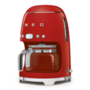
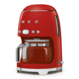
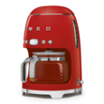
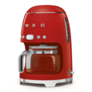

Another domestic icon from Smeg, the Smeg retro filter coffee machine is the hottest way to make coffee. 10 cups capacity, programmable automatic start, select aroma intensity according to own taste, keep warm plate, adjustable water hardness and side water gauge. With its user friendly control panel, digital clock and LED display, this Smeg coffee machine is a beauty to look at and to use
| Material type | Stainless steel |
| Capacity | 1.7L |
| Dimension | 256x361x245 |
| Guarantee/Warrantee | 1 year |